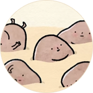
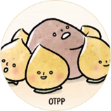

TEA+ Healthy Secrets
LESS SUGAR
เมื่ออากาศในเมืองไทยนั้นเหมาะเหลือเกินที่จะหาเครื่องดื่มดับกระหายหวานๆ เย็นๆ มาดื่ม จนหลายคนเสพติดรสหวานโดยไม่รู้ตัว ความหวานที่เกินพอดีนั้น ก่อให้เกิดโรคภัยต่างๆ ตามมา แต่ทีพลัส เครื่องดื่มชาที่ผลิตจากชาอู่หลงคุณภาพ ลดน้ำตาลลงจากสูตรเดิมถึง 46% ทำให้ตอบโจทย์คนรักสุขภาพ ให้สามารถดื่ม ได้อย่างไร้กังวล เคล็ดลับดีๆ ที่คนรักสุขภาพอย่างคุณต้องลอง
{kind=link}
Sugar in Daily Life ลดน้ำตาลแล้วดียังไง?
ในหนึ่งวันเราไม่ควรบริโภคน้ำตาลเกินวันละ 6 ช้อนชา แต่คุณรู้หรือไม่ว่าในหนึ่งวันคนไทยบริโภคน้ำตาลเป็นจำนวนมากซึ่งบางครั้ง เราไม่รู้ว่าอาหารและเครื่องดื่มที่เรารับประทานไปนั้นมีน้ำตาลอยู่ผสมอยู่ปริมาณเท่าไร จะดีแค่ไหนถ้าคุณรู้ว่าอาหารและเครื่องดื่ม ทั้งหลายนั้นมีน้ำตาลอยู่มากแค่ไหน มาดูกัน!
นมเปรี้ยว 23.75 ช้อนชา l ชานมไข่มุก 16.07 ช้อนชา l ชาเขียวผสมน้ำผึ้ง 15 ช้อนชา l น้ำอัดลม 13.08 ช้อนชา
ชามะนาว 12.92 ช้อนชา l กาแฟสด 10.58 ช้อนชา l เครื่องดื่มรสช็อคโกแลต 9.74 ช้อนชา
ชาเย็นสูตรโบราณ 9.17 ช้อนชา l นมถั่วเหลืองสูตรหวาน 8.75 ช้อนชา l เค้ก 1 ชิ้น 11 ช้อนชา
ไอศครีมโคนรสวานิลา 7 ช้อนชา
ในแต่ละวัน ๆ เรารับประทานอาหารเข้าไปหลากหลายประเภท และส่วนใหญ่มีน้ำตาลเป็นส่วนประกอบ การกินน้ำตาลมาก ๆ ไม่ว่าจะมาจากอาหาร เครื่องดื่ม หรือขนม จะก่อให้เกิดอันตรายต่อสุขภาพหลายประการ เช่น
- • ร่างกายเกิดภาวะไม่สมดุลหากกินน้ำตาลมากไป ทำให้เลือดมีสภาวะเป็นกรดมากเกินไป
- • ตับจะเก็บน้ำตาลไว้ถ้ามีมากจนเกินไป จะส่งไปยังกระแสเลือดและเปลี่ยนเป็นกรดไขมันตามมา และจะสะสมไว้ในส่วนต่างๆของร่างกาย เช่น สะโพก ก้น ขาอ่อน หน้าท้องทำให้อ้วน
- • หากกินน้ำตาลอย่างต่อเนื่อง กรดไขมันจะสะสมไว้ที่อวัยวะภายในอื่นๆ ได้อีก เช่นหัวใจ ตับ และไต ทำให้อวัยวะเหล่านี้ ถูกห่อหุ้มด้วยไขมัน ร่างกายจะเริ่มผิดปกติ และส่งผลให้เกิดโรคต่างๆ ได้อีก
- • การกินน้ำตาลมากเกินไป มีผลต่อการทำงานของสมอง ทำให้รู้สึกง่วง
- • กินน้ำตาลมากเกินไปส่งผลให้มีอาการปวดศีรษะเรื้อรัง เป็นสิว ผื่น แผลพุพอง ตกกระ ไมเกรน เบาหวาน วัณโรค โรคหัวใจ มะเร็งตับได้อีกด้วย
น้ำตาลเป็นอาหารที่ให้พลังงานสูง แต่หากบริโภคมากเกินไปอาจส่งผลเสียให้เกิดโรคภัยต่างๆ ตามมาได้ ดังนั้นในแต่ละวันเราจึงควรเลือก บริโภคอาหารและเครื่องดื่มที่มีปริมาณน้ำตาลที่เหมาะสม เพื่อสุขภาพที่ดี ปลอดภัย ห่างไกลโรค นี่คือเหตุผลที่ชาอู่หลงทีพลัสลดปริมาณ น้ำตาลลงถึง 46.43% จากสูตรเดิม เพื่อให้คุณได้ดื่มชาอู่หลงรสชาติกลมกล่อม อย่างไร้กังวล และมี OTPP ช่วยบล็อคไขมันคงไว้ซึ่งคุณค่า เพื่อสุขภาพที่ดีของคุณ
OTPP
OTPP คือสารกลุ่มโพลิเมอร์ไรซ์ โพลิฟีนอล (Oolong Tea Polymerized Polyphenol) หรือ โพลิฟีนอลชนิดเข้มข้น
เอกสิทธิ์หนึ่งเดียวเฉพาะในชาอู่หลงทีพลัส OTPP เป็นสารสกัด โพลิฟีนอลชนิดเข้มข้น ที่เกิดขึ้นเองตามธรรมชาติจากกระบวนการบ่มชา
ด้วยเทคนิคเฉพาะหนึ่งเดียวของทีพลัส ทำให้ในชาอู่หลง ทีพลัส ทุกขวด มีสาร OTPP ชนิดเข้มข้นมากกว่า 70 มิลลิกรัม
มีประสิทธิภาพลดการดูดซึมไขมันเข้าสู่ร่างกาย ซึ่งแตกต่างจากชาอู่หลงทั่วไป
OTPP สามารถยับยั้งการทำงาน ของเอนไซม์ไลเปส ลดระดับไตรกลีเซอไรด์ภายหลังจากรับประทานอาหาร เพิ่มการขับไขมันออก
จากร่างกาย และมีคุณสมบัติช่วยกระตุ้นการเผาผลาญพลังงาน อีกด้วย
จากการศึกษาทั้งในประเทศญี่ปุ่นและในเมืองไทยพบว่า การดื่มชาอู่หลงที่ประกอบด้วย OTPP ในปริมาณอย่างน้อย 70 มิลลิกรัม
ทุกวันสามารถลดการดูดซึมไขมันในร่างกายได้ถึง 20% นั่นหมายความว่า ถึงแม้เราจะกินอาหารอะไรก็ตาม
สาร OTPP ตัวนี้จะไปดักไขมันไม่ให้ดูซึมเข้าสู่ร่างกาย พอไขมันไม่ถูกดูดซึมเข้าร่างกาย เราก็สามารถมีความสุขกับการทานอาหาร
ได้เต็มที่ ไร้กังวล ตามมานั่นเอง
วิธีการทำงานของ OTPP
-
เมื่อรับประทานอาหารที่มีไขมันเข้าไป
-

ไขมันจะถูกดูดซึมเข้ารางกายและทำให้อ้วน
-
แต่ถ้าเราดื่มชาอู่หลงที่มี OTPP
-

สารนี้จะเข้าไปลดการดูดซึมของไขมันสู่รางกาย
ชาอู่หลงลดการดูดซึมของไขมัน เพราะมี OTPP
จากการทดลองพบว่าการดื่มชาอู่หลงที่ประกอบด้วย OTPP อย่างน้อย 70 มิลลิกรัม ทุกวันสามารถลดการดูดซึมไขมันได้มากถึง 20%

OTPP STUDY IN THAILAND & JAPAN
OTPP Clinical Study by Mahidol University
ผลของการบริโภคชาอู่หลงต่อระดับไตรกลีเซอร์ไรด์ในเลือดหลังอาหาร
(เอกราช บารุงพืชน์*, เรวดี จงสุวัฒน์* )
ชาอู่หลง คือ ชาที่ผ่านกระบวนการบ่มแบบกึ่งหมักจากใบชาสด ซึ่งมีสารออกฤทธิ์ทางชีวภาพหลัก ได้แก่
อู่หลงที โพลีเมอไรซ์ โพลีฟีนอล หรือ โอทีพีพี การศึกษาวิจัยก่อนหน้านี้พบว่าชาอู่หลงสามารถลดการดูดซึม
ไขมันได้โดยยับยั้งเอนไซม์ไลเปสทำให้เพิ่มการขับไขมันออกจากร่างกาย
ผลการศึกษาพบว่าชาอู่หลงสามารถลดระดับไตรกลีเซอไรด์ในเลือดหลังการบริโภคอาหารที่มีไขมันสูงได้อย่างมีนัยสำคัญ
นอกจากนี้ยังพบว่าพื้นที่ใต้กราฟของระดับไตรกลีเซอไรด์ในกลุ่มที่ดื่มชาอู่หลงลดลงอย่างมีนัยสำคัญ
การศึกษาครั้งนี้จึงสรุปได้ว่า การดื่มชาอู่หลงที่มีสารโอทีพีพี 70 มก. สามารถยับยั้งการดูดซึมไขมัน ทำให้ระดับไตรกลีเซอไรด์
ในเลือดหลังบริโภคอาหารที่มีไขมันสูงลดลงได้ ดังนั้นการดื่มชาอู่หลงจึงอาจเป็นทางเลือกหนึ่งที่ใช้สาหรับป้องกันโรคอ้วน
หรือช่วยควบคุมน้าหนักตัวได้
*ภาควิชาโภชนวิทยา คณะสาธารณสุขศาสตร์ มหาวิทยาลัยมหิดล
*ผลการวิจัยนี้สอดคล้องกับงานวิจัยของ คณะแพทย์ศาสตร์ มหาวิทยาลัยโชวะ ประเทศญี่ปุ่น